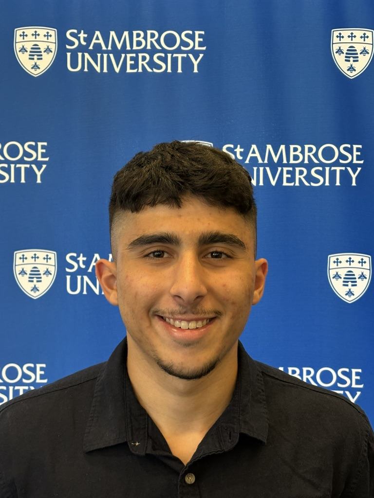

About

I am an M.S. in Data Science student at NYU's Center for Data Science. I grew up in São Paulo, Brazil, came to the United States to play college soccer, and studied Data Science and Mathematics at St. Ambrose University.
Most of my work is building machine learning into products people use. At Karrera AI I built the search behind the platform, and on my own I built a World Cup prediction app for leagues of friends. I care about the whole path, from cleaning messy data to keeping a model honest once it ships.
Right now I'm most interested in AI agents and LLM apps that stay grounded in real sources, like the learning agent I'm building at NYU and an advisory agent I co-built for farmers in Iowa. I also keep coming back to forecasting and sports analytics, which is why I rebuild a model for Kaggle's March Machine Learning Mania every year.